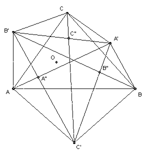

ABC is an acute-angled triangle. B' is a point on the perpendicular bisector of AC on the opposite side of AC to B such that angle AB'C = 2A. A' and C' are defined similarly (with ∠CA'B = 2∠C, ∠BC'A = 2∠B). The lines AA' and B'C' meet at A". The points B" and C" are defined similarly. Find AA'/A"A' + BB'/B"B' + CC'/C"C'.
Solution
Answer: 4.

Note that ∠B' is not twice ∠B, but twice ∠A, so ∠BAB' = ∠CBC' = ∠ACA' = 90o. Also ∠B'AC = 90o + (90o - ∠B) < 180o. Note also that the reason for ABC being acute-angled is to ensure that ∠AB'C < 180o (so that B' does indeed lie on the opposite side of AC to B). Thus AB'CA'BC' is convex.
Let the circle center B' through A and C meet the circle center A' radius B and C at O. Then ∠AOC = 180o - 1/2 ∠AB'C = 180o - ∠A. Similarly, ∠COB = 180o - ∠C. Hence ∠AOB = 360o - ∠AOC - ∠COB = ∠A + ∠C = 180o - ∠B. Hence O also lies on the circle center C' through A and B. Now since the circles center A' and B' meet at O and C, the points O and C are reflections in A'B'. Similarly for O and A, and O and B.
AA'/A"A' = 1 + AA"/A'A" = 1 + area AB'C'/area A'B'C'. Hence AA'/A"A' + BB'/B"B' + CC'/C"C' = 3 + (area AB'C' + area BC'A' + area CA'B')/area A'B'C' = 3 + (area OB'C' + area OC'A' + area OA'B')/area A'B'C' = 4.

© John Scholes
jscholes@kalva.demon.co.uk
14 Oct 2002